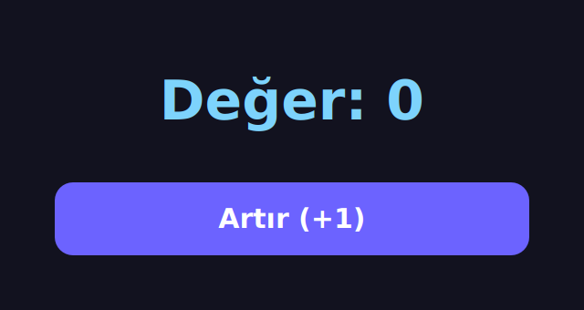
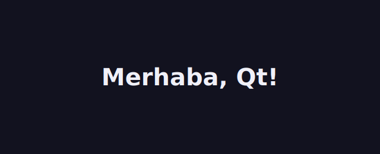
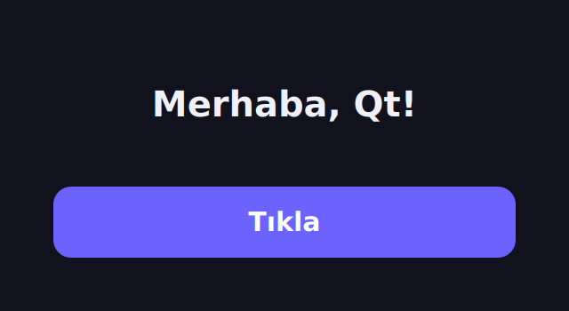
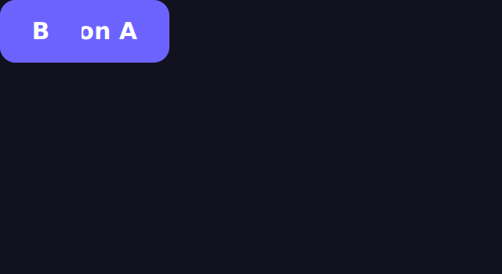
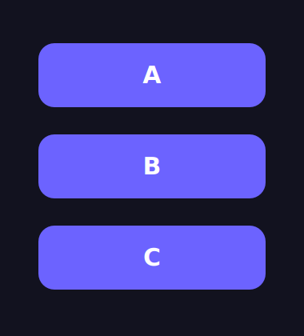
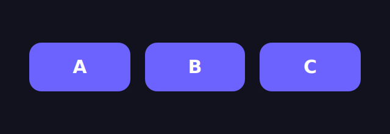
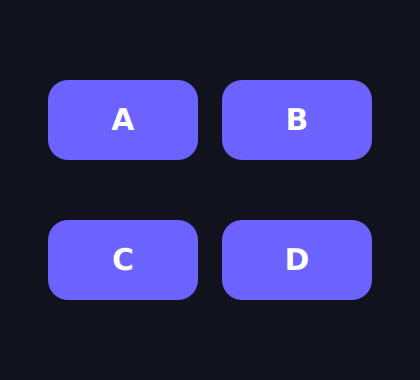
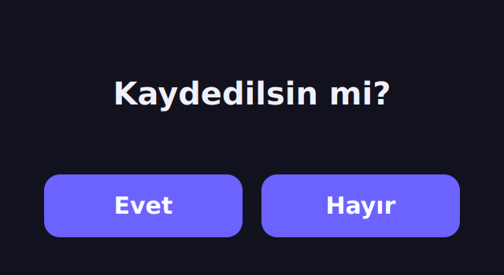
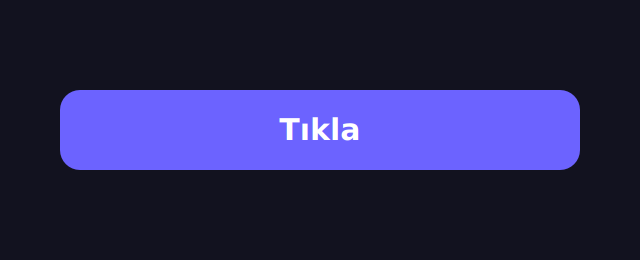

Fonksiyon mu Yazacağız,
Nesne mi Üreteceğiz?
Nesne Yönelimli Programlamaya Giriş
Yaşayarak, Kod Yazarak Öğreneceğiz
🧩 Nesneyi Yaşayarak
Kavramları slaytta değil, çalışan bir masaüstü uygulaması yazarak öğreneceğiz.
🖥️ Araç: PySide6 (Qt)
Bir GUI'de her şey bir nesnedir — pencere, buton, etiket. OOP için birebir laboratuvar.
📈 Hafta Hafta
Kalıtım → polimorfizm → soyut sınıflar → thread → tasarım desenleri; her konu çalışan örneklerle.
Hedef: dönem sonunda nesne yönelimli, GUI tabanlı Qt uygulamalarını kendin tasarlayıp yazabilmek.
Neden Nesneler?
🧱 Prosedürel
Veri ve fonksiyonlar ayrı durur. Program büyüdükçe global değişkenler dağılır, bakım zorlaşır.
sayac = 0
def artir():
global sayac
sayac += 1🧩 Nesne Yönelimli
Veri + davranış tek nesnede. Her nesne kendi durumundan sorumlu → düzenli, yeniden kullanılabilir.
class Sayac:
def __init__(self):
self.deger = 0
def artir(self):
self.deger += 1Sınıf mı, Nesne mi?
📐 Sınıf (Class)
Bir şablon / kalıp. "Buton nasıl olmalı?" tarifi. Tek başına bir şey yapmaz.
🔘 Nesne (Object)
Kalıptan üretilmiş somut örnek. Aynı sınıftan binlerce nesne üretilebilir.
Qt'de QPushButton bir sınıftır; her buton onun bir nesnesidir:
kaydet = QPushButton("Kaydet") # 1. nesne
sil = QPushButton("Sil") # 2. nesne — ayni sinif, farkli nesneBir GUI'de her şey bir nesnedir

→ "Değer: 0" yazısı
→ "Artır" butonu
Üçü de ayrı birer nesne — hepsi aynı pencerede yaşıyor. İşte bu yüzden GUI, nesne yönelimli düşünmeyi öğrenmenin en doğal yoludur.
Kurulum & İlk Pencere
pip install PySide6from PySide6.QtWidgets import QApplication, QLabel
app = QApplication([]) # her Qt uygulamasi 1 tane ister
etiket = QLabel("Merhaba, Qt!") # bir NESNE olusturduk
etiket.show() # nesneye "kendini goster" dedik
app.exec() # olay dongusunu baslat
4 satır → ilk pencere. Ama
"etiketi app'e hiç eklemedik, nasıl açıldı?" → sıradaki
slayt.
Kap (QWidget) Eklemeden Nasıl Pencere Oldu?
🧩 Parent VERİRSEN
Widget, kabın içinde görünür.QLabel("...", parent=kap)
🪟 Parent YOK (None) — bizim durum
Widget'in kendisi üst-düzey pencere olur.QLabel("Merhaba, Qt!")
# parent yok
QLabel, QWidget'ten türer → parent verilmezse Qt onu kendi penceresi yapar. Uygulamaya elle eklemezsin: QApplication tektir (singleton), Qt global tutar, her widget otomatik ona bağlanır.
Peki İki Bileşen Olursa? Kap + Düzen
from PySide6.QtWidgets import (QApplication, QWidget,
QLabel, QPushButton, QVBoxLayout)
app = QApplication([])
pencere = QWidget() # KAP: üst pencere
duzen = QVBoxLayout(pencere) # DÜZEN: dizer
duzen.addWidget(QLabel("Merhaba, Qt!")) # 1. bileşen
duzen.addWidget(QPushButton("Tıkla")) # 2. bileşen
pencere.show()
app.exec()
Tek widget kendi başına pencereydi. Birden çok widget
için bir kap (QWidget) gerekir; bileşenleri düzen (QVBoxLayout)
dizer, addWidget ile eklenir. Peki düzeni eklemek
zorunlu mu? → sıradaki: düzen şart mı?
QWidget.layout() → None
Düzen Şart mı? Default: Düzen Yok
app = QApplication([])
pencere = QWidget() # layout() → None
QPushButton("Buton A", pencere) # ikisi de (0, 0)...
QPushButton("B", pencere) # ...üst üste biner!
pencere.show(); app.exec()
Zorunlu değil — ama düzen koymazsan bileşenler
(0,0)'da üst üste yığılır, pencere büyüyünce yerinde donar. Elle
move()/setGeometry() ile de koyabilirsin; ama asıl kolay ve
responsive yol düzenlerdir. →
peki hangi düzenler var?
Tek Düzen Değil: Düzen Ailesi
Aynı butonları (A · B · C) kaba koyduk; hangi düzeni seçtiğimiz
dizilimi belirler. Kod tek satır değişir: QVBoxLayout → QHBoxLayout →
QGridLayout.

QVBoxLayout
Dikey · alt alta

QHBoxLayout
Yatay · yan yana

QGridLayout
Izgara · (w, satır, sütun)
Düzen bir strateji: aynı bileşenler, farklı yerleşim. Üstelik düzenler iç içe de girer → karmaşık arayüzler kuralım.
addLayout
Düzenler İç İçe Girer addLayout
dis = QVBoxLayout(pencere) # DIŞ: dikey
dis.addWidget(QLabel("Kaydedilsin mi?"))
satir = QHBoxLayout() # İÇ: yatay
satir.addWidget(QPushButton("Evet"))
satir.addWidget(QPushButton("Hayır"))
dis.addLayout(satir) # düzeni düzene ekle!
Bir düzeni başka bir düzene addWidget değil
addLayout ile eklersin. Böylece dikey + yatay birlikte çalışır — gerçek
ekranlar hep iç içe basit düzenlerden kurulur. Ama bu kod hâlâ
dağınık → bir sınıfa toplayalım.
Pencereyi Bir Sınıf Yap (→ ile satır satır)
from PySide6.QtWidgets import QApplication, QWidget, QPushButton, QVBoxLayout
class Pencere(QWidget): # QWidget'tan KALITIM
def __init__(self): # kurucu metot
super().__init__() # ust sinifin kurucusu
self.setWindowTitle("Hafta 1") # self = bu nesnenin kendisi
btn = QPushButton("Tıkla")
btn.clicked.connect(self.tiklandi) # sinyal -> slot
duzen = QVBoxLayout(self)
duzen.addWidget(btn)
def tiklandi(self): # bir METOT (davranis)
print("Nesne yonelimli!")
app = QApplication([])
pencere = Pencere() # sinifimizdan bir NESNE
pencere.show()
app.exec()if __name__ == "__main__": — Neden?
class Pencere(QWidget):
... # sinifimiz
if __name__ == "__main__": # sadece dogrudan
app = QApplication([])
pencere = Pencere()
pencere.show()
app.exec()▶ python hafta1.py
__name__ → "__main__" ✅ blok
çalışır, pencere açılır.
📦 import hafta1
__name__ → "hafta1" ⛔ blok
çalışmaz, sınıf hazır olur.
Özetle: bu blok yalnızca dosya doğrudan çalıştırılınca
işler; Pencere'yi başka modüle import edince uygulama kendiliğinden açılmaz.
Peki
class Pencere(QWidget) Ne Kazandırdı?
# ham QWidget nesnesi
w = QWidget()
w.show() # bos pencereHazır ama bomboş — başlık yok, buton yok, davranış yok.
+ kendi
parçanı ekle
class Pencere(QWidget): # devral
def __init__(self):
super().__init__()
self.setWindowTitle("Hafta 1")
# + QPushButton, QVBoxLayout ...
Aynı QWidget'ı devraldık + kendi başlığımızı ve butonumuzu ekledik.
Miras işte bu: hazır QWidget'ın her şeyini
al, üstüne kendi parçalarını ekle — pencereyi sıfırdan yazmazsın.
Anahtar Satırlar
class Pencere(QWidget): def __init__(self): super().__init__() self.setWindowTitle("Hafta 1")
👆 Bir anahtar kelimeye tıkla
Koddaki altı çizili parçalara tıkla — ne işe yaradıklarını burada anlatayım.
Dördü de OOP'nin taşıyıcı kolonları: kalıtım, kurucu, üst sınıf çağrısı ve self.
self nedir?
Her metot, ilk parametre olarak hangi nesne üzerinde çalıştığını
alır. Ona geleneksel olarak self deriz.
p1 = Pencere()
p2 = Pencere()
p1.tiklandi() # self -> p1
p2.tiklandi() # self -> p2 (ayni metot, farkli nesne)Aynı sınıf, iki ayrı nesne, iki ayrı durum.
self ikisini karıştırmadan tutar.
Aynı Buton, İki Sonuç — Tek Fark: self
def artir(self):
self.deger += 1 # nesnede saklanir
self.etiket.setText(
f"Değer: {self.deger}")✅ Öznitelik — nesnede yaşar, birikir. (0 tık → 0)
def artir(self):
deger = 0 # yeniden dogar
deger += 1
self.etiket.setText(
f"Değer: {deger}")⚠️ Yerel değişken — metot bitince ölür. (0 tık → hep 1)
Tek fark self: öznitelik nesnede saklanır; yerel
değişken metot bitince ölür (self'i büsbütün unutsan çoğu zaman UnboundLocalError).
Öznitelik · Metot · Kapsülleme
📦 Öznitelik
Nesnenin durumu / verisi.self.sayac = 0
⚙️ Metot
Nesnenin davranışı.def artir(self): ...
🔒 Kapsülleme
Durum + davranışı tek nesnede bir arada tutmak.
Şimdi hepsini tek bir çalışan uygulamada birleştirelim.
Sayaç — Nesneyi Kur
class SayacPenceresi(QWidget):
def __init__(self):
super().__init__()
self.setWindowTitle("Sayaç")
self.sayac = 0 # OZNITELIK (durum)
self.etiket = QLabel("Değer: 0")
btn = QPushButton("Artır (+1)")
btn.clicked.connect(self.artir) # olay -> metot
duzen = QVBoxLayout(self)
duzen.addWidget(self.etiket)
duzen.addWidget(btn)Sayaç — Davranışı Ekle
def artir(self): # METOT (davranis)
self.sayac += 1 # 1) durumu degistir
self.etiket.setText(
f"Değer: {self.sayac}") # 2) arayuzu guncelleİki adım:
1️⃣ self.sayac özniteliğini değiştir (durum).
2️⃣
setText ile QLabel'i tazele (arayüz).
→ Şimdi bunu gerçekten çalıştıralım.
Butona Bas, Nesne Tepki Versin
self.sayac += 1
self.etiket.setText(f"Değer: {self.sayac}")
Buradaki pencere gerçekten çalışıyor: tıkladığında self.sayac
artar, soldaki satırlar sırayla işler, QLabel tazelenir. Kod = davranış.
Her Nesnenin Kendi self'i Vardır
Aynı sınıftan iki nesne ürettik. Birini artır → diğeri değişmez. Kanıtı sen tıkla:
a = SayacPenceresi() # kendi self.sayac'i
b = SayacPenceresi() # AYRI self.sayac'iBağımsızlar çünkü a.sayac ile b.sayac
bellekte ayrı yerlerde. İşte "nesne" budur.
Anladın mı? Tıkla, Gör
self.sayac nedir?Bir Tur Daha
super().__init__() neden çağrılır?btn.clicked.connect(self.artir) ne yapar?Bu Hafta Ne Öğrendik?
✅ Sınıf = kalıp, nesne = örnek
✅ __init__ kurucu ve self
✅ Öznitelik (durum) & metot (davranış)
✅ Kapsülleme — durum + davranış bir arada
✅ GUI'de her şey nesne (QWidget, QPushButton…)
✅ İlk sinyal → slot (olay → metot)
Sayaç'ı Sen Büyüt
Bu haftaki SayacPenceresi uygulamasını aç ve üç adımı ekle —
küçük ama gerçek bir nesne yönelimli uygulama.
1 · Sıfırla
Sayacı 0'a döndüren "Sıfırla"
butonu ve sifirla() metodu ekle. (21. slaytta çalışan hâlini gördün.)
2 · Azalt
"Azalt (−1)" butonu ekle. Değer 0'ın
altına düşmesin (if).
3 · İki Nesne
SayacPenceresi()'nden
iki nesne oluştur, ikisini de göster. Sayaçlar bağımsız mı? (22. slayt ipucu.)
🎯 3. görev "nesne" kavramının kalbidir: her nesnenin kendi
self.sayac'ı vardır.
Kalıtım I
Hazır QPushButton'dan kendi özel
butonumuzu türetip özelleştireceğiz — kalıtımın temelleri.